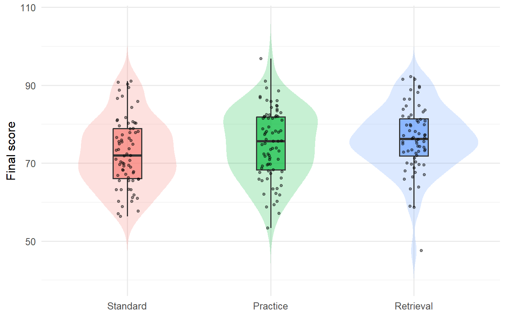
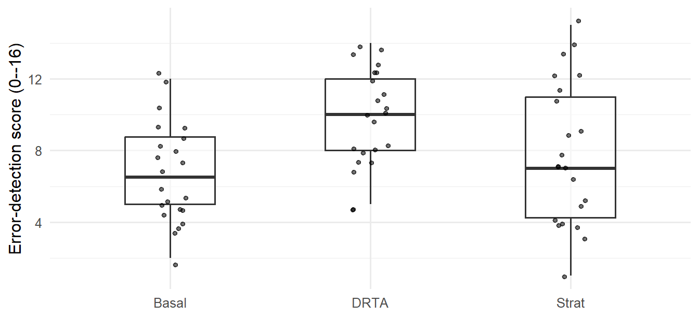

| Intention | Did not pass | Passed | Row total | Passing proportion |
|---|---|---|---|---|
| no | 13 | 7 | 20 | 0.350 |
| yes | 117 | 258 | 375 | 0.688 |
Categorical Association and Analysis of Variance
TipChapter box
Sustained research question: Among fourth-grade students represented by comparable repetitions of this randomized study in the same school setting, how would mean error-detection score compare under a policy assigning equal proportions to DRTA and think-aloud instruction versus assigning everyone to DRA?
Candidate answer and status: The source study planned this instructional contrast. The chapter’s analysis is a secondary, unadjusted reanalysis of one of three quantitative outcomes, so its inferential family and limitations must remain explicit.
Focal components — statistical argument: STAT-E empirical evidence records the observations and how they were produced; STAT-J statistical justification states why the design, assumptions, and procedure bear on the declared target; STAT-I statistical inference supplies the estimand, estimate, uncertainty, checking, and analytic status; and STAT-C bounded statistical claim retains the magnitude, uncertainty, conditions, and reservations.
Focal components — substantive argument: SUB-E contextualized empirical evidence identifies whom, what, where, and when the observations represent; SUB-J substantive justification augments and evaluates the statistical support using literature, theory, measurement, and design relevance; SUB-I substantive inference and interpretation gives the statistical result meaning in context; and SUB-C bounded substantive claim answers the research question without exceeding the statistical boundary.
Main evidence: Categorical and quantitative group comparisons in a public observational sample, one- and two-factor analyses in a documented simulation, randomized-within-school study, and one real randomized instructional experiment.
Mechanism to explain: ANOVA partitions observed variation into fitted group-pattern and residual components; their mean-square ratio is evaluated against an \(F\) reference model.
Boundary: An omnibus result does not identify which comparison matters, measure practical importance, or turn observed groups into randomized factors. The unit, analytic sample, cell support, and assignment process bound every claim.
Opening Problem
Two common quantitative research questions do not initially look like regression questions:
- Is a categorical outcome distributed differently across groups?
- Do the population means of a quantitative outcome differ across groups?
For the first question, researchers usually begin with a two-way table. For the second, they often begin with ANOVA. Both methods are comparison frameworks. Their validity depends first on the unit, measurement, sampling or assignment mechanism, missingness, and target population - not on which menu command produces a p-value.
This chapter uses three evidence sources. The first is a synthetic study of 360 fictional students. Consent is selective, program assignment is randomized within school among consenters, and completion is affected by post-assignment variables. The data-generating process is known, so we can see exactly why random assignment and an analyzed complete-case sample are different design facts. The second is a curated subset of a real observational dataset from two Portuguese secondary schools. Its associations describe the recorded students; they are not automatically causal. The third is the Baumann randomized reading experiment, which supplies the sustained substantive question and makes the consequences of incomplete post-assignment outcomes visible.
The real example is drawn from the Student Performance dataset in the University of California, Irvine (UCI) Machine Learning Repository, a public archive of research datasets (Cortez, 2008).
The Baumann example is accessed directly from carData.
The chapter ends with an important bridge: ANOVA and regression are two representations of the same linear-model framework. One-way ANOVA uses group indicators; two-way ANOVA adds a second factor and, when required by the question and design, a factor-by-factor interaction (Maxwell et al., 2018).
Keep the reasoning from question to claim visible
A defensible analysis keeps both arguments connected. Within the statistical argument, STAT-E and STAT-J support STAT-I, which supports STAT-C. Within the substantive argument, SUB-E and SUB-J support SUB-I, which supports SUB-C. Across the arguments, each substantive component has a distinct relation to its statistical counterpart:
| Shared role | Statistical-to-substantive transition |
|---|---|
| Evidence | SUB-E situates STAT-E in population, setting, time, and substantive meaning. |
| Justification | SUB-J augments and evaluates STAT-J using literature, theory, measurement, and design relevance. |
| Inference | SUB-I interprets STAT-I in substantive units and context. |
| Claim | STAT-C bounds and calibrates SUB-C so that uncertainty and reservations remain visible. |
The Argument perspective asks what must logically justify the answer. The Workflow perspective asks how that reasoning is constructed and revised in eight operationally iterative stages. The Evaluation perspective uses seven named lenses to assess and calibrate it. These perspectives are many-to-many: no stage or lens belongs to only one component. The Baumann reading experiment later in the chapter demonstrates all three; shorter checkpoints elsewhere serve only as local reading aids.
NoteThe ANOVA mechanism and its research role
Several group means require one coherent comparison before individual pairs are interpreted. ANOVA partitions observed variation into fitted between-group and residual within-group components and compares their mean squares. The \(F\) ratio evaluates an omnibus mean pattern under a declared model; a specific contrast, outcome-scale uncertainty, design argument, and bounded substantive interpretation are still required.
In the synthetic study, for example, 360 students were invited, 271 consented, and only 216 both consented and completed the post-program assessment. Program was randomized among consenters, but restricting analysis to completers conditions on a post-assignment event. The resulting complete-case contrast is therefore not identical to the intention-to-treat contrast among everyone randomized.
The first task in any table or ANOVA analysis is thus to state which participants entered the analysis and why.
Categorical Association: Tables, Measures, and Inference
A two-way table cross-classifies the same observational units by two categorical variables (Agresti, 2018). The table can answer a research question only after we declare the four ingredients in Table 2:
| Ingredient | Example in the UCI data |
|---|---|
| Unit | One recorded student |
| Group or explanatory variable | Intention to pursue higher education: yes or no |
| Event or response | Passing: final grade at least 10 |
| Denominator | Students within each higher-education-intention group |
The group label explanatory describes the direction of the comparison. It does not establish that the variable causes the response.
Counts need denominators
In Table 3 there are more passing students in the yes group, but that group is also much larger. The within-row passing proportions are the relevant comparisons:
\[ \widehat p_{\text{yes}}=258/375=0.688, \qquad \widehat p_{\text{no}}=7/20=0.350. \]
The column percentages would answer another question: among students who passed or did not pass, what fraction intended higher education? Neither set of percentages is universally correct. The research question selects the denominator.
Difference, ratio, and odds ratio
For two groups and a binary event, three common descriptive measures are
\[ \widehat{RD}=\widehat p_1-\widehat p_0, \qquad \widehat{RR}=\frac{\widehat p_1}{\widehat p_0}, \qquad \widehat{OR}=\frac{\widehat p_1/(1-\widehat p_1)} {\widehat p_0/(1-\widehat p_0)}. \]
Using yes as group 1, no as group 0, and passing as the event gives a proportion difference of 0.338, a proportion ratio of 1.97, and an odds ratio of 4.10, collected in Table 4. These are different scales, not competing estimates of the same number.
- The difference says the observed passing proportion is 33.8 percentage points higher.
- The ratio says it is about 1.97 times as large.
- The odds ratio says the observed odds are about 4.10 times as large.
Because the event is common, the odds ratio is noticeably farther from 1 than the proportion ratio. Describing an odds ratio as a risk or probability ratio would overstate the comparison. Reversing the event or reference group also changes the sign or reciprocal, so a report must name both explicitly.
| Measure | Estimate |
|---|---|
| Proportion difference | 0.338 |
| Proportion ratio | 1.97 |
| Odds ratio | 4.10 |
Three kinds of target, declared before any test
The three measures above are realized descriptive quantities computed from the observed table, so they are known exactly. Expected counts derived from the observed margins and Pearson’s \(X^2\) can likewise be calculated as table summaries. A stochastic target and reference model are required only when that \(X^2\) is given a repeated-sampling interpretation or a p-value, or when an interval is attached to a population/process quantity. Three target types are used in this chapter, and a report must say which one it means.
| Target | What it is | Uncertainty |
|---|---|---|
| Realized descriptive quantity | A summary of the records actually in hand, such as \(\widehat p_{\text{yes}}-\widehat p_{\text{no}}\) | None: it is known exactly |
| Model or superpopulation estimand | A parameter of a stochastic record-generating process for which the observed participants are treated as one realization | From the assumed process, under stated conditions |
| Randomization estimand | A contrast defined by an assignment mechanism that the investigators controlled | From the assignment distribution |
For the UCI analysis this chapter declares a model or superpopulation estimand:
\[ \Delta_{\text{UCI}}=\pi_{\text{yes}}-\pi_{\text{no}}, \qquad \pi_g=P_{\mathcal{S}}(\text{pass}\mid\text{intention}=g), \]
where \(\mathcal{S}\) is a hypothetical record-generating process. Naming that process is what makes the interval and the test meaningful, so the conditions are stated in full:
- Stochastic repetition imagined. One more academic year of mathematics students at these two Portuguese secondary schools, enrolled, taught, questioned, and graded under the same procedures, would produce another cohort of the same kind. \(\pi_g\) is the passing probability for that process, not a proportion in any enumerated real population.
- Participant independence. Each student’s recorded intention and grade are treated as one independent draw. Students share classrooms, teachers, and schools, so this is an assumption imposed by the analysis, not a documented property of the source.
- Missingness and selection. The curated dataset contains no missing values on the two analyzed variables, but it already reflects enrollment, survey participation, and the curation described in the source documentation (Cortez, 2008). \(\mathcal{S}\) includes that selection; students outside those processes are outside the target.
- Process stability. Intention, teaching, and the pass threshold of 10 are assumed to mean the same thing across both schools and across the imagined repetition.
- Prespecification. The intention-by-pass comparison was chosen for this chapter after the dataset was curated. It is therefore exploratory: the p-value is model-based evidence under the working process, not confirmatory control of a prespecified decision rule.
\(\Delta_{\text{UCI}}\) is the target of the chi-square test and the interval below, and it must remain the target of the bounded statistical claim. If a reader is unwilling to grant that process, the honest report stops at the realized descriptive quantities.
Independence, expected counts, and the chi-square statistic
The null hypothesis for Pearson’s chi-square test of independence states that, in the population represented by the design, the distribution of one categorical variable is the same across levels of the other (Agresti, 2018; Moore et al., 2014). Here that population is the record-generating process \(\mathcal{S}\) just declared, and the omnibus null is \(\Delta_{\text{UCI}}=0\). For row \(r\) and column \(c\), the expected count under independence is
\[ E_{rc}=\frac{(\text{row }r\text{ total})(\text{column }c\text{ total})}{n}. \]
The Pearson statistic aggregates standardized discrepancies between observed and expected counts:
\[ X^2=\sum_r\sum_c\frac{(O_{rc}-E_{rc})^2}{E_{rc}}, \qquad df=(R-1)(C-1). \]
A large statistic means that the table is far from the independence pattern relative to its expected sampling variation. It does not identify a cause or say which cells matter most.
| Intention | Pass status | Observed | Expected | Standardized residual |
|---|---|---|---|---|
| no | No | 13 | 6.58 | 3.13 |
| no | Yes | 7 | 13.42 | -3.13 |
| yes | No | 117 | 123.42 | -3.13 |
| yes | Yes | 258 | 251.58 | 3.13 |
| Quantity | Value |
|---|---|
| Pearson chi-square | 9.82 |
| df | 1 |
| p | .002 |
| Cramer’s V | 0.158 |
Table 7 reports the omnibus result: \(\chi^2=9.82\), \(df=1\), and \(p = .002\) using the uncorrected Pearson reference distribution. The data are inconsistent with \(\Delta_{\text{UCI}}=0\) under the declared record-generating process. The standardized residuals in Table 6 show the direction: the yes-and-pass and no-and-not-pass cells exceed their expected counts. This remains an observational association. Intention, prior achievement, opportunity, and many other features may be entangled.
Strength and pattern are separate from evidence
For an \(R\times C\) table, Cramer’s \(V\) rescales the Pearson statistic by the sample size and the smaller table dimension (Cramér, 1946):
\[ V=\sqrt{\frac{X^2}{n\min(R-1,C-1)}}. \]
It is zero when observed counts match the independence pattern and approaches one in some strongly associated tables. The value here is about 0.158. No universal small/medium/large label can supply substantive meaning. Report it with conditional percentages and cell diagnostics so readers can see the pattern that produced the omnibus value.
Three groups and a binary outcome
| Program | Did not pass | Passed | Row total | Passing proportion |
|---|---|---|---|---|
| Standard | 30 | 41 | 71 | 0.577 |
| Practice | 25 | 52 | 77 | 0.675 |
| Retrieval | 14 | 54 | 68 | 0.794 |
In Table 9 the passing proportions were 0.577, 0.675, and 0.794 for Standard, Practice, and Retrieval respectively.
| Quantity | Value |
|---|---|
| Pearson chi-square | 7.51 |
| df | 2 |
| p | .023 |
| Cramer’s V | 0.187 |
The omnibus chi-square result in Table 10 is \(\chi^2(2)=7.51\), \(p = .023\). Its target is again a model estimand, not the realized table: the passing probabilities of the complete-case record-generating process defined in the next section. It says those modeled probabilities are not all equal; it does not say that all three pairwise proportions differ. The randomization estimand available in this study is different again — the contrast among everyone randomized, which the assignment mechanism itself defines — and this complete-case table does not estimate it, because program was randomized before some students failed to complete the outcome. A causal statement about the complete-case association would require an argument that conditioning on completion did not break the randomized comparison.
Sparse tables and exact inference
The chi-square reference distribution is an approximation. It becomes unreliable when expected counts are too small or observations are not independent. A common diagnostic is whether expected counts are mostly at least five, but that is a screening convention rather than a law. Examine the full table, sample size, design, and analysis purpose.
For a small \(2\times2\) table, Fisher’s exact test calculates a conditional reference distribution given the margins (Agresti, 2018; Fisher, 1935). In Table 11, the two smaller expected counts are only 4, so the usual approximation deserves caution.
| Group | Event | No event |
|---|---|---|
| A | 1 (4.00) | 9 (6.00) |
| B | 7 (4.00) | 3 (6.00) |
Fisher’s two-sided p-value for this table is about .020. “Exact” refers to the conditional probability calculation. It does not mean that the sample represents a population exactly, that observations are independent, or that the variables were measured without error.
Group Means: Distributions and Estimands
When the response is quantitative, the quantity of interest often changes from group proportions to group means. The three targets of Table 5 apply unchanged, and the synthetic study makes all three visible at once.
The realized descriptive quantities are the 216 completers’ group means. They are known exactly and need no interval. The randomization estimand is the program contrast among all 271 randomized consenters, which the within-school assignment mechanism supports as a causal assignment target; no analysis in this chapter estimates it, because the outcome is missing for 55 of them. What the ANOVA below does target is a model or superpopulation estimand for the analyzed complete cases. Writing \(C=1\) for consent and \(R=1\) for a recorded final score, let \(Y_{ij}\) be the response for unit \(i\) in group \(j\) and define
\[ \mu_j=E_{\mathcal{P}}(Y\mid G=j,\;C=1,\;R=1). \]
The conditioning set is part of the symbol, not a footnote to it: \(\mu_j\) is the mean of the arm-specific observed-completer distribution, and the imagined repetition \(\mathcal{P}\) is another run of the same six-school invitation, consent, within-school assignment, implementation, and follow-up process. Participant independence, a stable process, finite group variances, and the variance model are further conditions. Because completion is a post-assignment event, \(\mu_R-\mu_S\) is not the randomization estimand and must not be relabeled as one.
A one-way comparison asks whether these means are equal, but a good analysis begins with the distributions.

The groups in Figure 1 overlap heavily. The plot also shows possible skewness, unusual values, and whether mean differences are substantively large relative to within-group variation. A bar chart of means alone would hide all of this.
The numerical summary in Table 12 reports a center and two measures of spread for each program: the standard deviation (SD, the typical distance between an observation and its group mean) and the interquartile range (IQR, the width of the middle half of the distribution, from the 25th to the 75th percentile). Reporting both keeps a skewed group from being described by one number.
| Program | n | Mean | SD | Median | IQR |
|---|---|---|---|---|---|
| Standard | 71 | 72.74 | 8.85 | 71.90 | 12.75 |
| Practice | 77 | 74.90 | 8.98 | 75.60 | 13.60 |
| Retrieval | 68 | 76.21 | 8.38 | 76.20 | 9.53 |
Its observed means are 72.74, 74.90, and 76.21. As realized descriptive quantities they are exact; as estimates they estimate the three \(\mu_j=E_{\mathcal{P}}(Y\mid G=j,C=1,R=1)\) just defined. Whether those comparisons generalize, and whether they can be interpreted causally, depends on how units entered the groups and the analysis.
Observational groups require restrained language
In the UCI data, study-time category was reported rather than assigned. As Table 13 shows, the mean final grades range from about 10.05 to 11.40, but the groups differ in many other ways. The analysis can describe an association between reported study time and final grade. It cannot isolate the effect of changing study time without a stronger design and identification assumptions.
| Study time | n | Mean | SD |
|---|---|---|---|
| <2 h | 105 | 10.05 | 4.96 |
| 2-5 h | 198 | 10.17 | 4.22 |
| 5-10 h | 65 | 11.40 | 4.64 |
| >10 h | 27 | 11.26 | 5.28 |
One-Way ANOVA: The Group-Mean Model and the F Statistic
One-way ANOVA splits the total observed variation into a part fitted by the group means and a residual part, and compares the two. The procedure and its \(F\) reference distribution originate in Fisher’s experimental-design work (Fisher, 1935) and are developed in modern form by Maxwell et al. (2018) and Moore et al. (2014). The one-way ANOVA model can be written
\[ Y_{ij}=\mu_j+\varepsilon_{ij}, \qquad E(\varepsilon_{ij}\mid G=j)=0. \]
The omnibus null hypothesis is
\[ H_0:\mu_1=\mu_2=\cdots=\mu_J. \]
The alternative is that at least one population mean differs. It does not say that every pair differs, nor does it name a particular pair.
Partitioning variation
Let \(\bar Y\) be the grand mean, \(\bar Y_j\) the mean in group \(j\), and \(\widehat Y_{ij}=\bar Y_j\). Then
\[ \underbrace{\sum_{j}\sum_i(Y_{ij}-\bar Y)^2}_{SS_{\text{total}}} = \underbrace{\sum_j n_j(\bar Y_j-\bar Y)^2}_{SS_{\text{between}}} + \underbrace{\sum_j\sum_i(Y_{ij}-\bar Y_j)^2}_{SS_{\text{within}}}. \]
This identity separates variation represented by group-mean differences from variation among units around their group means. The labels between and within refer to this decomposition; they do not prove a causal mechanism.
For \(J\) groups and \(n\) observations,
\[ MS_{\text{between}}=\frac{SS_{\text{between}}}{J-1}, \qquad MS_{\text{within}}=\frac{SS_{\text{within}}}{n-J}, \qquad F=\frac{MS_{\text{between}}}{MS_{\text{within}}}. \]
If all population means are equal and the model conditions are adequate, both mean squares estimate the common error variance. An \(F\) much larger than one is evidence against the equal-means model.
| Source | df | Sum Sq | Mean Sq | F | p |
|---|---|---|---|---|---|
| Program (between) | 2 | 428.1 | 214.07 | 2.79 | .063 |
| Residual (within) | 213 | 16317.4 | 76.61 |
The classical result in Table 14 is \(F(2,213)=2.79\), \(p = .063\). At a prespecified \(\alpha=.05\), this result does not reject the omnibus equal-means hypothesis. It does not establish that the means are equal; the data remain compatible with a range of nonzero differences.
Verify the sum-of-squares identity
| Quantity | Value |
|---|---|
| SS total | 16745.5662 |
| SS between | 428.1495 |
| SS within | 16317.4168 |
| Total minus the two parts | 0.0000 |
The zero in the final row of Table 15 is an algebra check, not an inferential result.
Robustness, Effect Size, and Specific Comparisons
Classical one-way ANOVA uses a model with independent errors, correctly specified group means, and a common within-group variance. Normality concerns the conditional error distribution, not whether every raw group histogram is perfectly bell-shaped. Moderate nonnormality is often less serious than dependence, severe outliers, or a design that does not support the target.
Assumptions are questions about the data-generating process
| Condition | Research audit |
|---|---|
| Independent units or modeled dependence | Could one student’s outcome inform another’s because of clustering, pairing, or repeated measurement? |
| Appropriate group-mean structure | Is one mean per group a useful summary, or do important gradients remain? |
| Comparable variance model | Do spreads differ enough that a common residual variance is implausible? |
| Stable measurement | Is the outcome measured comparably across groups? |
| Design supports scope | Were groups assigned, sampled, or merely observed? Who is missing? |
The audits in Table 16 are the questions that matter. No residual plot can diagnose random assignment, representativeness, or measurement validity. Conversely, a statistically detectable variance difference does not by itself invalidate an analysis. Use plots, design knowledge, and a sensitivity analysis.
Welch’s ANOVA
Welch’s one-way test allows unequal group variances and adjusts the reference degrees of freedom (Welch, 1947). It is often a useful default sensitivity analysis when group sizes or spreads differ.
| Model | Numerator df | Denominator df | F | p |
|---|---|---|---|---|
| Classical pooled variance | 2 | 213.00 | 2.79 | .063 |
| Welch unequal variance | 2 | 141.59 | 2.84 | .062 |
For the synthetic completers, Table 17 reports Welch’s result as \(F(2,141.59)=2.84\), \(p = .062\), close to the classical ANOVA result. Agreement is reassuring about this particular variance-model choice; it does not validate all other assumptions.
Effect size: how much sample variation is represented?
The sample eta-squared (Cohen, 1988; Lakens, 2013) is
\[ \eta^2=\frac{SS_{\text{between}}}{SS_{\text{total}}}. \]
It is the fraction of observed outcome variation represented by the fitted group means. Because it tends to be optimistic in finite samples, an approximately bias-adjusted alternative is
\[ \omega^2= \frac{SS_{\text{between}}-(J-1)MS_{\text{within}}} {SS_{\text{total}}+MS_{\text{within}}}, \]
usually bounded below at zero when reported descriptively.
Here \(\eta^2=.026\) and \(\omega^2=.016\). The fitted groups represent about 2.6% of observed score variation, and the bias-adjusted estimate is about 1.6%. These values do not say that program caused that fraction of variation.
No interval is attached to either quantity here, and that is a declared reporting decision rather than an oversight. Both are reported as realized descriptive summaries of this analyzed sample, on a scale with no outcome units; an interval for them would require a further target of its own (a superpopulation variance ratio) and a noncentral \(F\) or bootstrap construction whose conditions are stronger than anything else in this chapter. This chapter therefore makes the contrast intervals the principal uncertainty display: the planned-contrast interval below and the Tukey-Kramer family carry the uncertainty, in score points, and \(\eta^2\) and \(\omega^2\) are reported beside them as unitless descriptions. A report that wants an interval on the variance-ratio scale should say so, name the target, and state the construction.
Planned contrasts
An omnibus test asks whether all means are equal. A contrast asks a more specific question:
\[ L=\sum_{j=1}^{J}w_j\mu_j, \qquad \sum_{j=1}^{J}w_j=0. \]
Suppose the substantive question, declared before examining outcomes, is whether Retrieval differs from the average of Standard and Practice. With the order Standard, Practice, Retrieval, the weights are \((-1/2,-1/2,1)\).
| Estimate | SE | df | t | p | Lower | Upper |
|---|---|---|---|---|---|---|
| 2.39 | 1.28 | 213 | 1.86 | .064 | -0.14 | 4.91 |
Table 18 estimates that contrast as 2.39 points with a 95% confidence interval from about -0.14 to 4.91. The interval communicates both the direction favored by the sample and the remaining uncertainty. A planned contrast is not automatically more powerful; its advantage is that it matches a prespecified scientific question and avoids searching a large family for a favorable result.
Exploratory pairwise comparisons and multiplicity
With three groups there are three pairwise comparisons; with \(J\) groups there are \(J(J-1)/2\). Examining many unadjusted 95% intervals increases the chance that at least one excludes zero even when all population means are equal. Tukey’s studentized-range procedure controls the familywise error rate for the family of all pairwise mean comparisons (Tukey, 1953), and the Tukey-Kramer extension accommodates unequal group sizes (Kramer, 1956).
| Comparison | Difference | Lower | Upper | Adjusted p |
|---|---|---|---|---|
| Practice-Standard | 2.16 | -1.24 | 5.56 | 0.292 |
| Retrieval-Standard | 3.47 | -0.04 | 6.97 | 0.053 |
| Retrieval-Practice | 1.30 | -2.13 | 4.74 | 0.643 |
In Table 19 the Retrieval-Standard estimate is 3.47 points, but its Tukey 95% familywise interval extends slightly below zero (-0.04 to 6.97). This is compatible with the nonsignificant omnibus result. A coefficient-specific unadjusted p-value from a regression output can differ because it answers one comparison without familywise adjustment.
Name the inferential family before making a compatibility statement
An omnibus joint restriction, one contrast interval, and a family of pairwise intervals do not use the same compatibility language. The omnibus test asks whether the joint equal-means restriction is inconsistent with the data; the two interval procedures ask whether zero remains among compatible contrast values. Table 20 keeps those statements separate.
| Family | Question | Calibrated statement |
|---|---|---|
| Omnibus equal-means reference | Are all three modeled means equal? | Joint equality not rejected: p = .063 |
| Prespecified Retrieval contrast | Does Retrieval differ from the average of the other two? | Zero included: 95% CI [-0.14, 4.91] |
| Tukey-Kramer all-pairs family | Does any one pair differ, with familywise control? | Zero included in all three; largest lower limit -0.04 |
Here the omnibus test does not reject the joint equal-means restriction, the prespecified contrast interval includes zero, and all three Tukey-Kramer intervals include zero. Had only the prespecified contrast excluded zero, the correct report would say exactly that while also reporting that the omnibus joint restriction was not rejected and the familywise pairwise intervals all included zero. That combination is coherent rather than contradictory.
A Real Randomized Comparison: Reading Comprehension Instruction
The sustained substantive research question is:
Among fourth-grade students represented by comparable repetitions of this randomized study in the same school setting, how would mean error-detection score compare under a policy assigning equal weight to DRTA and think-aloud instruction versus assigning DRA?
The synthetic study supplies transparent arithmetic, and the UCI example shows an observational association. This real experiment shows what random assignment adds, while keeping attrition, model uncertainty, multiplicity, and substantive interpretation visible.
Provenance first
The Baumann dataset distributed with the carData package (Fox et al., 2022; Fox & Weisberg, 2019) contains the 66 available complete outcome records from an experiment reported by Baumann, Seifert-Kessell, and Jones. The public original report (Baumann et al., 1992) documents 68 randomized fourth-grade children: 23 assigned to think-aloud instruction (Strat in the package), 23 to directed reading-thinking activity (DRTA), and 22 to directed reading activity (Basal). One child in the think-aloud arm and one in the DRTA arm lacked a complete outcome because of illness or transfer. The package dataset therefore contains observed outcomes for 66 students, 22 per group. It records two pretests and three post-tests. This reanalysis uses post.test.1, the error-detection score (0–16), because its package group means and standard deviations reproduce the article’s observed-score summaries. The package’s post.test.3 variable does not reproduce the article’s raw modified-cloze summaries and even contains a value outside the article’s stated 0–56 range, so it is not treated here as a verified raw outcome.
The original report supplies more context than the package help, but important limits remain. It does not supply a probability sample or a transport target, and an error-detection score point has no broadly interpretable benchmark. The authors prespecified two orthogonal treatment contrasts for each of three quantitative outcomes, including the equal-weighted innovative-versus-Basal contrast used below. This chapter nevertheless reports only post.test.1, uses an unadjusted one-way analysis rather than the article’s pretest-adjusted analysis, and does not adjust across the three outcomes. Treat the result as a transparent secondary reanalysis of one planned contrast, not as a fresh confirmatory replication.
Link the research question to the model estimand
Let \(\mathcal S\) denote comparable repetitions of the same school setting, assignment process, instructional conditions, outcome, and follow-up. For assigned group \(g\), define \(\mu_{g,\mathcal S}=E(Y\mid G=g,\mathcal S)\). The statistical estimand aligned with the research question is
\[ L_{\mathcal S}=\tfrac12\mu_{\mathrm{DRTA},\mathcal S} +\tfrac12\mu_{\mathrm{Strat},\mathcal S} -\mu_{\mathrm{DRA},\mathcal S}. \]
This is a model-superpopulation assignment contrast for comparable repetitions, not a transport claim about other schools. Random assignment supports an effect-of-assignment interpretation when the conditions are well defined, students do not affect one another’s outcomes, and the observed outcomes represent each assigned arm. Here one outcome is missing from each innovative arm. Identification of \(L_{\mathcal S}\) therefore requires the untestable within-arm mean-exchangeability condition: within each affected arm, the mean outcome for students with a missing score equals the mean for students with an observed score in \(\mathcal S\).
The numerical analysis is written directly as the indicator regression promised by the chapter. Let \(R_i=1\) indicate that the error-detection outcome was observed. With DRA (Basal) as the reference group, the observed-outcome model is
\[ E(Y_i\mid G_i,R_i=1)=\beta_0+\beta_1 I(G_i=\mathrm{DRTA})+ \beta_2 I(G_i=\mathrm{Strat}). \]
Its observed-outcome contrast is
\[ L_{\mathrm{obs}}=\tfrac12\beta_1+\tfrac12\beta_2. \]
Within-arm mean-exchangeability links the two estimands: \(L_{\mathrm{obs}}=L_{\mathcal S}\). Conditional on the observed group indicators, independent Gaussian errors with one common within-group variance make the pooled \(t\) and \(F\) references exact for the observed-outcome group-mean model; under that missingness condition, the interval targets \(L_{\mathcal S}\). This is model-based uncertainty, not a finite-sample randomization interval for the particular 68 assignees. Welch’s test is an approximate sensitivity analysis that relaxes only the equal-variance condition; neither procedure repairs attrition or establishes an effect of instruction actually received. The latter interpretation additionally requires individual adherence and implementation evidence.
| Group | n | Mean | SD |
|---|---|---|---|
| Basal | 22 | 6.68 | 2.77 |
| DRTA | 22 | 9.77 | 2.72 |
| Strat | 22 | 7.77 | 3.93 |

Estimation, sensitivity, and the specific comparison
| Quantity | Value |
|---|---|
| Classical F | F(2, 63) = 5.32 |
| Classical p | .007 |
| Welch F | F(2, 41.13) = 6.99 |
| Welch p | .002 |
| Eta-squared | .144 |
| Omega-squared | .116 |
| Planned contrast (points) | 2.09 |
| Contrast 95% CI | [0.43, 3.75] |
The omnibus comparison in Table 22 rejects the joint equal-means restriction at \(\alpha=.05\), \(F(2,63)=5.32\), \(p = .007\), and Welch’s unequal-variance analysis agrees, \(p = .002\). The planned contrast comparing an equal allocation across the two innovative assignments with the traditional assignment, weights \((-1,\tfrac12,\tfrac12)\), is 2.09 points with a 95% confidence interval from 0.43 to 3.75, which excludes zero.
| Comparison | Difference | Lower | Upper | Adjusted p |
|---|---|---|---|---|
| DRTA-Basal | 3.09 | 0.78 | 5.40 | 0.006 |
| Strat-Basal | 1.09 | -1.22 | 3.40 | 0.497 |
| Strat-DRTA | -2.00 | -4.31 | 0.31 | 0.102 |
Naming the families again: the omnibus test rejects the joint equal-means restriction at \(\alpha=.05\); the planned equal-allocation contrast interval excludes zero; and in the Tukey-Kramer family only DRTA-Basal excludes zero (0.78 to 5.40), while Strat-Basal and Strat-DRTA do not. A report that said only “the groups differed” would hide exactly that structure.
A bounded result before substantive interpretation
Among the 66 students with observed outcomes, the pooled omnibus test rejects the joint equal-means restriction at the declared level, and the planned innovative-mixture-minus-DRA contrast is 2.09 points with model-based 95% CI [0.43, 3.75]. In the Tukey-Kramer family, only DRTA minus DRA excludes zero.
The model interval directly describes \(L_{\mathrm{obs}}\) and describes \(L_{\mathcal S}\) only under within-arm mean-exchangeability. It is a secondary, unadjusted analysis of one of three quantitative outcomes. It does not supply a finite-sample randomization interval for the particular 68 assignees, erase the two missing outcomes, establish either innovative method’s separate effect, or support transport beyond comparable repetitions of this setting. The complete application of the Argument, Workflow, and Evaluation perspectives appears after the regression bridge.
ANOVA as Additive Regression
Let Standard be the reference group and define two indicators:
\[ D_{Pi}=I(G_i=\text{Practice}), \qquad D_{Ri}=I(G_i=\text{Retrieval}). \]
The additive regression is
\[ Y_i=\beta_0+\beta_P D_{Pi}+\beta_R D_{Ri}+\varepsilon_i. \]
Its fitted means are
| Group | Indicators | Fitted mean |
|---|---|---|
| Standard | \(D_P=0,D_R=0\) | \(\beta_0\) |
| Practice | \(D_P=1,D_R=0\) | \(\beta_0+\beta_P\) |
| Retrieval | \(D_P=0,D_R=1\) | \(\beta_0+\beta_R\) |
Table 24 shows the consequence: \(\beta_P=\mu_P-\mu_S\) and \(\beta_R=\mu_R-\mu_S\). Changing the reference group changes the coefficients but not the fitted group means, residuals, or omnibus comparison.
| Term | Estimate | SE | t | p |
|---|---|---|---|---|
| Intercept (Standard mean) | 72.74 | 1.04 | 70.03 | < .001 |
| Practice - Standard | 2.16 | 1.44 | 1.50 | .135 |
| Retrieval - Standard | 3.47 | 1.49 | 2.33 | .021 |
In Table 25 the intercept 72.74 is the Standard mean. The Practice coefficient 2.16 and Retrieval coefficient 3.47 are differences from Standard. The omnibus hypothesis is a joint block test,
\[ H_0:\beta_P=\beta_R=0, \]
not two unrelated coefficient tests.
| Program | Observed mean | Regression fitted mean |
|---|---|---|
| Standard | 72.7423 | 72.7423 |
| Practice | 74.9039 | 74.9039 |
| Retrieval | 76.2088 | 76.2088 |
The ANOVA \(F\) is 2.7944 and the regression \(F\) is 2.7944. The fitted means in Table 26 and the two \(F\) statistics match exactly because the two procedures fit the same model. This is the bridge to later regression chapters: a factor with \(J\) levels contributes \(J-1\) columns to the design matrix, and its omnibus contribution is tested jointly.
Two-Way ANOVA and Factorial Designs
Chapter 1 introduced factorial designs as a design idea: crossing the levels of two factors so that every planned combination forms a cell, then asking about each factor’s main effect and about their interaction. Two-way ANOVA is the quantitative counterpart of those design terms. It estimates the cell means, summarizes each factor’s marginal contribution, and tests whether one factor’s comparison changes across levels of the other (Fisher, 1935; Maxwell et al., 2018).
The synthetic study already has a crossed structure. Program was randomized within each of 6 schools, so school and program are crossed: every school contains all 3 programs. In Chapter 1 language, program is the randomized treatment factor and school is a blocking factor, and the 18 cells are the school-by-program combinations among the 216 completers.
| School | Standard | Practice | Retrieval |
|---|---|---|---|
| School_A | 65.45 (11) | 72.33 (11) | 70.52 (9) |
| School_B | 73.53 (12) | 72.14 (15) | 73.64 (14) |
| School_C | 72.64 (11) | 71.68 (12) | 74.61 (11) |
| School_D | 74.42 (13) | 77.16 (14) | 79.65 (8) |
| School_E | 71.70 (12) | 77.38 (12) | 79.14 (12) |
| School_F | 77.96 (12) | 78.54 (13) | 79.21 (14) |
In Table 27 the cell sizes range from 8 to 15, so the design is crossed but unbalanced. Every cell is occupied, which is what allows all three questions to be asked.
![Line plot with the six schools A to F on the horizontal axis and cell mean final score on the vertical axis, one line per program. All three profiles trend upward across the schools within a band of about 65 to 80 points. Retrieval is highest in Schools B through F, but in School A Practice is highest at about 72 while Standard is lowest at about 65. The Standard and Practice lines cross between Schools A and B and again between Schools C and D, and the Practice and Retrieval lines cross between Schools A and B; from School B to School C the ordering stays Practice below Standard below Retrieval and no lines cross.](chapter_04_files/figure-html/fig-two-way-interaction-1.png)
Cell-mean and effects models
The cell-mean model is
\[Y_{ijk}=\mu_{ij}+\varepsilon_{ijk},\]
where \(i\) indexes school, \(j\) indexes program, and \(k\) indexes students within a cell. An equivalent effects model is
\[Y_{ijk}=\mu+\alpha_i+\beta_j+(\alpha\beta)_{ij}+\varepsilon_{ijk}.\]
This effects notation is shorthand: the coefficients require an identifying scheme, such as reference-cell coding or explicit sum-to-zero constraints. The fitted cell means and the nested-model tests below do not depend on which full-rank coding is chosen.
Two-way ANOVA can represent factor A, factor B, their interaction, and residual variation, but the tests must be attached to explicit model comparisons. The interaction hypothesis has the direct cell-mean meaning
\[H_{0AB}:\text{all differences of differences are zero}.\]
If an additive model is substantively defensible, its factor tests ask whether all coefficients for one factor are zero after representing the other factor. In an unbalanced design, a generic phrase such as “no main effect” is incomplete until the model hierarchy and averaging rule are stated. The next section therefore reports three explicit nested-model tests rather than relying on a generic ANOVA row label.
Three explicit nested-model tests
Because the cells are unbalanced, Table 28 avoids an order-dependent sequential table. Each row identifies a smaller and larger model, and its \(F\) ratio uses the residual mean square and denominator degrees of freedom from that larger model (Kutner et al., 2005; Maxwell et al., 2018):
- interaction: compare the additive school-plus-program model with the full school-by-program model;
- program within an additive model: compare the school-only model with the school-plus-program model; and
- school within an additive model: compare the program-only model with the school-plus-program model.
The interaction test is therefore about differences of differences. The other two tests are conditional on the additive model: they are not claims that the interaction is exactly zero, and they should not be interpreted if substantively important heterogeneity remains. Under each larger model, independent Gaussian errors with a common variance make the corresponding nested-model \(F\) reference exact conditional on the observed factor indicators.
| Question | Smaller -> larger model | df | F | p |
|---|---|---|---|---|
| School within the additive model | program only -> school + program | 5, 208 | 5.44 | < .001 |
| Program within the additive model | school only -> school + program | 2, 208 | 3.00 | .052 |
| School x Program interaction | school + program -> school * program | 10, 198 | 0.63 | .787 |
The interaction row is the first to read. Its result, \(F(10,198)=0.63\), \(p = .787\), gives no evidence that the program comparison differs across schools, which matches the near-parallel profiles in Figure 3. A nonsignificant interaction is not proof of exact additivity; with 198 residual degrees of freedom spread over 18 cells, only fairly large differences of differences would be detected.
Because this is the synthetic study, the known data-generating process can be consulted directly. The score generator adds an additive program effect and an additive school shift and contains no school-by-program term, so near-parallel profiles and a small interaction \(F\) ratio are expected here, not discovered from the p-value. In real data, a nonsignificant interaction does not support an additive model. Treating additivity as a working simplification should also consider the estimated interaction pattern and its uncertainty, substantive expectations, prespecification, and sensitivity of the claims.
For this simulation, the documented generator provides external support for using the additive model as a working simplification. Within that model, the school block test is \(F(5,208)=5.44\), \(p < .001\), and the program test is \(F(2,208)=3.00\), \(p = .052\). In real research, the decision to adopt an additive model needs design, theory, graphical evidence, and sensitivity—not only a nonsignificant interaction test.
| Program | n | Observed mean | Equal-cell mean |
|---|---|---|---|
| Standard | 71 | 72.74 | 72.62 |
| Practice | 77 | 74.90 | 74.87 |
| Retrieval | 68 | 76.21 | 76.13 |
| School | n | Observed mean |
|---|---|---|
| School_A | 31 | 69.36 |
| School_B | 41 | 73.06 |
| School_C | 34 | 72.94 |
| School_D | 35 | 76.71 |
| School_E | 36 | 76.07 |
| School_F | 39 | 78.60 |
The two margins answer different questions and are therefore reported separately: Table 29 averages over schools, and Table 30 averages over programs. The two program mean columns differ only slightly here because the cells are close to balanced, but the distinction matters: the observed mean weights schools by how many completers each contributed, while the equal-cell mean weights the six schools equally. A report must say which one it used.
Blocking and the declared error model
Because program was randomized within school, representing school is aligned with the design and can improve precision when school is prognostic. The additive school-plus-program model reduces the residual mean square from 76.61 to 69.37 in this sample. That improvement is not guaranteed, and it does not change the assignment-policy target.
In unbalanced data, different defensible model comparisons can use different error models and therefore yield slightly different \(F\) values. Choose the comparison from the design and target before examining which p-value is smaller. Here the interaction test uses the full cell-means model as its larger model, whereas the school and program tests use the additive model as their larger model. Later regression chapters develop model comparison more fully.
The design determines the claim
This section returns directly to Chapter 1. In a true factorial experiment, both treatment factors are assigned according to the design, so causal contrasts can be defined for each factor and their interaction. In the randomized block structure above, only program is assigned; school is a design variable, not a second intervention, so the school “main effect” describes how schools differ, not what assigning a school would do. If both factors are merely observed, the same model describes conditional means but does not create causal effects (Maxwell et al., 2018; Shadish et al., 2002).
Independence must be argued from the assignment and sampling process, not read from the ANOVA table; randomization within school does not by itself remove shared-school dependence or interference. Approximate Normality and common within-cell variance concern the errors conditional on the cells. In unbalanced data, report every cell size: main effects can depend on how marginal means are weighted, and empty cells can make some effects inseparable.
If an interaction is substantively important, report cell means and simple comparisons before interpreting main effects. A main effect averages over the other factor and can conceal meaningful heterogeneity.
Regression bridge
Two-way ANOVA is a regression with indicator variables for the factors and their joint combinations. The interaction contribution is a joint block test, not a justification for interpreting one convenient coefficient in isolation. Chapter 9 develops the product-term regression representation and extends the same logic to continuous-by-categorical and continuous-by-continuous interactions.
Applying the Framework Through Three Perspectives
The Baumann question now returns as one sustained application. The statistical argument answers an intermediate question through an observed-outcome indicator-model contrast while keeping the all-assignee assignment question visible. The substantive argument interprets that answer as evidence about reading instruction while preserving every statistical boundary.
Argument perspective
| Code | Concise application to the reading experiment |
|---|---|
| STAT-E | Assignment records for 68 children (23 think-aloud, 23 DRTA, 22 DRA); 66 observed 0–16 error-detection scores; two missing outcomes; two pretests, three outcomes, and delivery assessments. |
| STAT-J | The target process \(\mathcal S\) fixes the same setting, assignment, instruction, outcome, and follow-up. Random assignment supports an assignment contrast under consistency and no interference; within-arm mean-exchangeability links \(L_{\mathrm{obs}}\) to \(L_{\mathcal S}\). The pooled interval additionally assumes independent Gaussian errors with one common within-group variance. |
| STAT-I | Planned estimand \(L_{\mathcal S}\), estimated through \(L_{\mathrm{obs}}=\tfrac12\beta_1+\tfrac12\beta_2\); estimate 2.09 points and model 95% CI [0.43, 3.75]. The analysis is secondary, unadjusted, and selects one of three outcomes; omnibus, Welch, Tukey, and effect-size results answer ancillary questions. |
| STAT-C | Conditional on the stated stochastic, independence, common-variance, missingness, consistency, and no-interference assumptions, \(L_{\mathcal S}\) is estimated as +2.09 points (model 95% CI [0.43, 3.75]). The interval is not a finite-sample randomization interval; the analysis is secondary and unadjusted, one of three outcomes was selected, and no broader transport target is defined. |
| SUB-E | 68 fourth-graders were assigned in one rural Midwestern school; 66 error-detection outcomes were observed and two were missing; the conditions were DRA, DRTA, and think-aloud instruction. |
| SUB-J | Comprehension-monitoring theory motivates the conditions; random assignment and the planned contrast support the comparison; delivery fidelity was high. Missingness, individual adherence, an educational-importance threshold, and relevance beyond comparable repetitions remain unresolved. |
| SUB-I | The estimated 2.09-point advantage is 13.1% of the 0–16 range; the model interval [0.43, 3.75] spans 2.7% to 23.5% of that range. It favors the planned mixture, but no educational-importance benchmark was justified and it does not establish each innovative method separately. |
| SUB-C | In comparable repetitions of this randomized study setting, assignment to an equal DRTA/think-aloud mixture is estimated to raise mean error-detection score by 2.09 points relative to DRA (model 95% CI [0.43, 3.75]), conditional on the assumptions retained in STAT-C. The analysis is secondary and unadjusted, does not establish either method separately or instruction received, and does not support broader population transport. |
The corresponding transitions are logically parallel but perform different work:
| Shared role | Statistical-to-substantive transition in this example |
|---|---|
| Evidence | SUB-E situates STAT-E by identifying the students, instructional conditions, setting, and meaning of the score. |
| Justification | SUB-J augments and evaluates STAT-J with comprehension-monitoring theory, operational definitions, and delivery evidence. |
| Inference | SUB-I interprets STAT-I on the 0–16 scale and separates the planned mixture from claims about either method alone. |
| Claim | STAT-C bounds and calibrates SUB-C by retaining missingness, model-based uncertainty, secondary status, multiplicity, and the comparable-process boundary. |
Workflow perspective
Stages 1–4 form the proposal phase; Stages 5–8 form the implementation phase. The stages are operationally iterative rather than a one-pass recipe.
| Stage | Application to the sustained question |
|---|---|
| 1. Conduct the literature review | Motivate comprehension monitoring and the three instructional conditions. |
| 2. Frame the research question and candidate answer | Compare the equal innovative mixture with DRA; retain the source study’s planned contrast while making no fresh prospective hypothesis for this secondary reanalysis. |
| 3. Plan design, measurement, and method of inference | Specify \(\mathcal S\), assignment, outcome, contrast, model conditions, implementation evidence, and missingness handling. |
| 4. Align and synthesize across questions: proposal phase | Align two treatment questions, three outcomes, two contrasts, and multiplicity. |
| 5. Conduct the study and collect or acquire data and contextual information | Assign 68 children, document delivery, and obtain 66 outcomes plus two incompleteness reasons. |
| 6. Conduct statistical estimation, checking, and analysis | Estimate the focal contrast and model interval; keep omnibus, Welch, Tukey, and effect-size results as ancillary families. |
| 7. Contextualize, justify, and interpret substantively | Interpret scale magnitude using theory, fidelity, attrition, and setting. |
| 8. Synthesize across questions: implementation phase | Answer this question; keep the second contrast, other outcomes, and transport separate. |
Evaluation perspective
The seven lenses form a reasoned profile, not a score:
| Lens | Focused evaluation |
|---|---|
| Question alignment | The planned mixture contrast matches the sustained question; the omnibus and Tukey family answer additional, distinct questions. |
| Evidence integrity | Assignment counts, two incomplete outcomes, score meaning, and fidelity records are visible; individual adherence is not observed. |
| Justification adequacy | Randomization supports the assignment comparison, while process stability, missingness, consistency, no interference, and the stochastic error model remain explicit conditions. |
| Inferential adequacy | The estimands, pooled exactness conditions, Welch sensitivity, effect sizes, interval, multiplicity family, and secondary status are explicit. |
| Transition fidelity | Each SUB component adds context or meaning without dropping the magnitude, uncertainty, assumptions, or selected-outcome status of its STAT counterpart. |
| Claim calibration | SUB-C answers for comparable repetitions, retains every condition and analytic limitation, and does not claim both methods worked separately or transport to other populations. |
| Cross-question coherence | This answer is one part of the source study’s two treatment questions and three outcomes; those linked questions require their own arguments and a study-level synthesis. |
The framework changes what counts as a complete report. A p-value is not the endpoint: the question-specific estimate, uncertainty, design support, substantive meaning, and reservations must remain traceable from STAT-E to SUB-C.
Reading Bridge
These publicly available readings extend particular parts of the chapter; they are not required to understand the chapter itself.
- Introduction to Modern Statistics, Chapter 4: Exploring categorical data - tables, conditional proportions, and categorical displays.
- Introduction to Modern Statistics, Chapter 17: Comparing two proportions - uncertainty for a prespecified two-group event comparison.
- Introduction to Modern Statistics, Chapter 18: Inference for two-way tables - expected counts, randomization logic, and the chi-square reference model.
- Introduction to Modern Statistics, Chapter 22: Comparing many means - the omnibus ANOVA question, reference distribution, and multiplicity.
- NIST/SEMATECH: Models and calculations for two-way ANOVA - factorial cells, main effects, interaction, and the two-way ANOVA decomposition.
- UCI Student Performance dataset page - source documentation, variable meanings, DOI, and access to
student_performance.csv. carDatapackage page - package information and theBaumanndocumentation for the randomized reading-comprehension experiment analyzed in this chapter.- ERIC record for Baumann, Seifert-Kessell, and Jones’s original experiment (Baumann et al., 1992) - a stable, public abstract and bibliographic record; the formal reference below cites the original report used for design and analysis details.
References
Agresti, A. (2018). Statistical methods for the social sciences (5th ed.). Pearson.
Baumann, J. F., Seifert-Kessell, N., & Jones, L. A. (1992). Effect of think-aloud instruction on elementary students’ comprehension monitoring abilities. Journal of Reading Behavior, 24(2), 143–172. https://doi.org/10.1080/10862969209547770
Cohen, J. (1988). Statistical power analysis for the behavioral sciences (2nd ed.). Lawrence Erlbaum Associates.
Cortez, P. (2008). Student performance [Dataset]. UCI Machine Learning Repository. https://doi.org/10.24432/C5TG7T
Cramér, H. (1946). Mathematical methods of statistics. Princeton University Press.
Fisher, R. A. (1935). The design of experiments. Oliver and Boyd.
Fox, J., & Weisberg, S. (2019). An R companion to applied regression (3rd ed.). SAGE Publications. https://www.john-fox.ca/Companion/index.html
Fox, J., Weisberg, S., & Price, B. (2022). carData: Companion to applied regression data sets (Versions 3.0-5). Comprehensive R Archive Network. https://doi.org/10.32614/CRAN.package.carData
Kramer, C. Y. (1956). Extension of multiple range tests to group means with unequal numbers of replications. Biometrics, 12(3), 307–310. https://doi.org/10.2307/3001469
Kutner, M. H., Nachtsheim, C. J., Neter, J., & Li, W. (2005). Applied linear statistical models (5th ed.). McGraw-Hill/Irwin.
Lakens, D. (2013). Calculating and reporting effect sizes to facilitate cumulative science: A practical primer for t-tests and ANOVAs. Frontiers in Psychology, 4, 863. https://doi.org/10.3389/fpsyg.2013.00863
Maxwell, S. E., Delaney, H. D., & Kelley, K. (2018). Designing experiments and analyzing data: A model comparison perspective (3rd ed.). Routledge.
Moore, D. S., McCabe, G. P., & Craig, B. A. (2014). Introduction to the practice of statistics (8th ed.). W. H. Freeman.
Shadish, W. R., Cook, T. D., & Campbell, D. T. (2002). Experimental and quasi-experimental designs for generalized causal inference. Houghton Mifflin.
Tukey, J. W. (1953). The problem of multiple comparisons [Unpublished manuscript]. Princeton University.
Welch, B. L. (1947). The generalization of “Student’s” problem when several different population variances are involved. Biometrika, 34(1–2), 28–35. https://doi.org/10.1093/biomet/34.1-2.28
Wilson, E. B. (1927). Probable inference, the law of succession, and statistical inference. Journal of the American Statistical Association, 22(158), 209–212. https://doi.org/10.1080/01621459.1927.10502953
Exercises
The exercises contain no answers. Keep each response focused on the research question, the relevant statistical target, and the strongest defensible claim.
Categorical comparison
A survey records 84 completions and 36 noncompletions online, and 63 completions and 17 noncompletions in person. Calculate the within-format completion proportions, the Online-minus-In-person proportion difference, and the odds ratio. State which quantity most directly answers how completion differed by format and give one design limitation on interpretation.
Chi-square evidence and pattern
For the same \(2\times2\) table, calculate expected counts, Pearson’s \(X^2\), and degrees of freedom. Identify the cells contributing most to the statistic. Write one bounded statistical claim that distinguishes evidence against independence from association strength and causation.
ANOVA, contrast, and multiplicity
Three independent groups have \(n=(8,10,12)\), means \((21,25,24)\), and within-group sums of squares \((56,81,99)\). Calculate the ANOVA table and state the omnibus null. Then define one scientifically meaningful contrast. Explain why its interval and an all-pairs Tukey family answer different questions.
ANOVA as regression and a factorial bridge
For a three-group comparison, use two indicators and a reference group to write the fitted means and joint null in regression notation. Add a second categorical factor conceptually and explain, without calculation, why cell means, interaction, marginal weighting, and the assignment design must be examined before interpreting either main effect.
Evaluate a real experiment
Using the Baumann question in this chapter, write one sentence for each of STAT-E, STAT-J, STAT-I, STAT-C, SUB-E, SUB-J, SUB-I, and SUB-C. Then identify one workflow stage at which the two missing outcomes should have changed the analysis plan and use Claim calibration to improve one sentence that overstates the evidence.